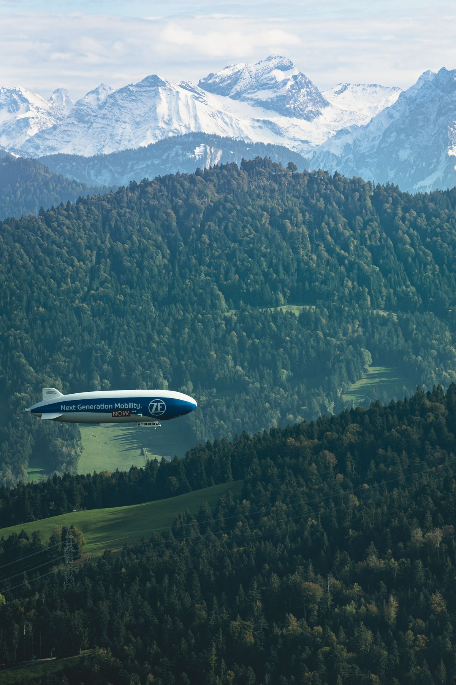

Envelope & lift engineering · Stratospheric airships
At 20 kilometres, the air barely helps.
I design envelopes, hulls and lift budgets for high-altitude airship programmes. The second thing to know: there is no operational stratospheric airship fleet — anywhere. Everything flying at 18–21 km today is a prototype or a balloon, station-keeping against stratospheric winds is still the unsolved problem, and any practice that hides that behind a sea-level lift figure is selling you the brochure, not the airship.
“Every airship brochure quietly divides by sea-level air. Mine shows the division.” Dr Katrin Vogel — the working rule of this practice

The lift calculator
Worked live from Table 1 as printed — the tool reads the table, so the two cannot disagree.
Lift is not a property of the airship. It is a property of the air it displaces — and at float altitude there is barely any air to displace. Table 1 is the whole argument: pick an altitude on the right and watch what altitude does to a 100,000 m³ envelope.
| Altitude | Flight level | ρ air kg/m³ | ρ helium kg/m³ | Net lift kg/m³ |
|---|---|---|---|---|
| 0 km | SFC | 1.2250 | 0.1691 | 1.0560 |
| 5 km | FL160 | 0.7361 | 0.1016 | 0.6345 |
| 10 km | FL330 | 0.4135 | 0.0571 | 0.3564 |
| 15 km | FL490 | 0.1948 | 0.0269 | 0.1679 |
| 18 km | FL590 | 0.1216 | 0.0168 | 0.1048 |
| 20 km | FL660 | 0.0889 | 0.0123 | 0.0766 |
| 22 km | FL720 | 0.0645 | 0.0089 | 0.0556 |
| 25 km | FL820 | 0.0401 | 0.0055 | 0.0346 |
The printed relation
Gross lift (kg) = (ρair − ρHe) × V
ρHe = 0.138 × ρair
Helium at the same pressure and temperature carries 13.8% of air's density (molar masses 4.00 vs 28.97 g/mol), so each cubic metre nets 86.2% of the local air density. Table 1 is the ISA standard atmosphere; real air on a real day differs from it, and a proper study prices that difference instead of hiding it.
FIG. 1 — Net lift per cubic metre against altitude, plotted from Table 1. The curve is not a detail of the design problem. It is the design problem.
Work it — from Table 1, as printed
Printed planning allowances — deducted before anyone says “payload”
The same 100,000 m³ at sea level would gross 105,595 kg. At 20 km you keep 7.3% of it. That difference is the whole design problem.
Studies offered
Five study types. If your problem is not one of these, the honest answer is a referral, not a proposal.
What a study costs
Rates are published because a budget you cannot see is a budget you cannot check — the same rule I apply to lift.
What moves the price: altitude and endurance move it first — they set the volume, and the volume sets everything downstream. Then materials-test depth. What never moves it: the conclusion. A budget that says no costs exactly what a budget that says yes costs; four programmes on this page paid full fee to be told to descend or stop.
Study estimator — from the printed rates
1 programmes × €4,900 (coupon test) = €4,900
2 days × €1,850 (trial support) = €3,700
A planning figure from the printed rates — not a quote. Every study is scoped in writing, with its deliverable named, before any invoice exists.
Three studies, told straight
Full briefs, decisions and outcomes on the case files page.
“The consortium arrived with an altitude and a brochure. Katrin sent back a budget. We descended two and a half kilometres, grew the envelope, and the programme is still alive — which the brochure version would not have been.”
Bring the altitude. I will bring the table.
First reply within two working days, leading with the useful-lift number for your stated altitude and volume — before any discussion of fees.
Start an enquiry